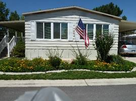

HOME IN MONTE VISTA MOBILE HOME PARK IN ROY, UTAH. NOVEMBER 2014
We have moved again, we hope this will be our last one. We have bought a double wide mobile home in the Monte Vista Mobile Home Park in Roy, Utah, so not so far away. Our address is 3800 S 1900 W #283 in Roy. Ken’s brother, Bob, who lived upstairs in the Clinton home, has gone to an assisted living center in Layton and since they had their home on a reverse mortgage, that meant we needed to move also. We feel the Lord has blessed us to find this nice home in a nice community. We loved our home in Clinton, our wonderful neighbors and our great ward, but since we are getting older, the big yard and garden was hard to keep up with, so I think this is a good move. We have a small, but beautiful yard here with trees, shrubs and flowers. We have a large covered deck, which I will enjoy relaxing on in good weather. We are still getting settled, but every day is an improvement. Wow! We had to much “stuff” and with downsizing, it has been a challenge to decide what we need to keep and what we need to get rid of. Ken is working on our shed to insulate it and put the shelves back in plus more shelves, so I will be glad what that is done and we can get the stuff on the back deck put in it. I’m sure our neighbors will be glad too. We have great neighbors and a wonderful ward and community. Monte Vista Mobile Home Park is one ward, so it is interesting – no primary, young women’s, young men’s or Elder’s Quorum. It is just high priests and relief society because most are retired or older single people and there are lots of widows. They are wonderful people. We went to church here on Sunday for the first time and the lady I sat by in Relief Society invited me to come to the Daughters of the Utah Pioneer’s Christmas Party, which was the next day. I went and met more friends and had a wonderful time. I’m sure we will love it here.
For an update on our family, our granddaughter, Chelci, Sandi’s daughter, gave birth to identical twin sons on Ken’s birthday – February 27th. They are crawling now and so cute. Chelci & Steve invited us to their beautiful home in Grantsville on Thanksgiving and we surely enjoyed being there with Sandi and this cute family. Jacob & Luke joined Nathan and Addie as siblings. The dinner was delicious, but I got out of doing dishes as Nathan & Addie wanted me to play “Hide & Seek” with them, and that was fun. Sandi has a beautiful home in Tooele and works at Grantsville High. JaNae & Brad live in Stockton and have 3 special children. JaNae teaches clogging and is really talented. It was fun to watch her teach her oldest daughter, along with the rest of the class, when we went out to visit them last month.
Our grandson, David, (Mike & Becky’s son) married a cute girl, Sierra, in August. They are living in Logan where David is going to Utah State University, and Sierra hopes to go in the spring, but we will see as they are expecting their first child. Mike and Becky are excited to be grandparents. That will make 9 great grandchildren for Ken and I. Mike and Becky’s daughter, Paige and husband, Garrett, also live in Logan where Paige is in her junior year of the “Interior Design” program. She is a talented young woman. Maddi is a teenager now and a cute out-going girl. Jessie is 12 and in her last year of Elementary School. We are going to her choir concert on Friday. Mike is the principal at Orem High and Becky works at the elementary school.
Shellie & Roy also just moved. They moved from Queen Creek, AZ to Chandler, Arizona, so not so far away either. They are in a mess too as they are remodeling this home. They take a breather to relax in their backyard as they live on a small lake. There are several lakes in their community. Their oldest son, Garrett, is in a dental program, so with school, work, church and his cute wife and little daughter, he keeps really busy. Shellie & Roy love being grandparents, and Quint, Kevis & Jase love their little niece too.
David & Shauna invited the family to their beautiful home in Enterprise (near Morgan, Utah) on Saturday, after Thanksgiving, where we ate, played games and visited. David is enjoying working as a PA in Dermatology. He and Dr. Harris keep really busy. Shauna is in the medical field too where she works part-time, from home, for McKay/Dee Hospital. Tyler plays basketball for Morgan High and loves it. Connor plays basketball too, but likes soccer and baseball better. Emily is really talented on the violin, and we love to hear her play.
Scott and Mishelle moved to a beautiful home in West Layton last year. Mishelle is very talented in many things and one of them is landscaping, so now they have a beautiful yard. She was big help to Ken & I in getting our new yard here in Roy cleaned up and ready for winter. Scott is a computer programmer and works for a company that does custom programming for Hill Air Force Base. Kylan is really talented both on the piano and with airplanes. He flies RC planes with adults at the flying field, not far from his home. Ashley loves creating things on “Mind Craft” and other sites on the computer and loves being with her cousins, Mike & Becky’s daughters, Maddi & Jessie. The twins, Kaden & Kaitlyn, keep Mishelle really busy, but she gets a breather when they are in kindergarten.
Jeff & Gail have a beautiful home in Layton, close to Hyw 89. Jeff loves the mountains so he loves to sit on his back deck and look at the, or take his oldest son, Ben, hiking up them. Jeff is a controller (in the accounting field) for three plants with his company. Gail keeps busy with their three children – Ben, Rachel and Matt, and keeping the household going smoothly. We enjoyed our annual vacation to Zion’s National Park with them this summer. Also, Sandi, Chelci and family joined us there. We all had a great time, even though we had lots of rain.
We were able to put our home together enough and the Christmas tree up, to have our annual older Grandchildren’s Christmas party last Saturday. One of the highlights of the party was doing service by going to an assisted living center in Clinton and putting on a program. We have some talented grandchildren, so that was fun to see them perform, plus we all sand Christmas carols. We will have the younger grandchildren’s Christmas party on the 27th. We are also looking forward to our annual Family Christmas Party, which will be on the 22nd. Scott and Mishelle are hosting it this year. Ken and I love being together with our special family, which total 46 at the present time.
**PUT UPDATE ON THIS MOVE AND WHAT WE ARE DOING NOW